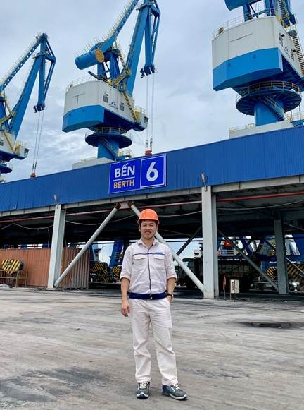

Thép Hòa Phát Dung Quất tích cực chuyển đổi số
Khu liên hợp gang thép Hòa Phát Dung Quất được đầu hệ thống dây chuyền hiện đại, áp dụng công nghệ lò cao khép kín, thiết bị được nhập khẩu từ các nhà sản xuất hàng đầu thế giới. Đây là dự án chiến lược của Tập đoàn, sau khi hoàn thành sẽ đảm bảo vị thế là nhà sản xuất thép hàng đầu khu vực Đông Nam Á, do đó hệ thống công nghệ thông tin cũng được đầu tư đồng bộ tiên tiến hướng đến 4.0 với điểm nhấn chính là hệ thống Data Center (Trung tâm dữ liệu) với tổng chi phí thiết bị hạ tầng khoảng 50 tỷ đồng.
Đây cũng là điều mà anh Trần Trọng Tuyên, Trưởng ban Công nghệ thông tin, Công ty Thép Hòa Phát Dung Quất muốn khoe khi nhắc tới hệ thống CNTT “khủng” của dự án. Cùng HPG News trao đổi với anh Trần Trọng Tuyên để hiểu rõ hơn về những công nghệ thông tin hiện đại mà Thép HP Dung Quất đang áp dụng nhé.
|
 Lý lịch trích ngang: Họ và tên: Trần Trọng Tuyên Chức danh: Trưởng ban CNTT – Công ty thép Hòa Phát Dung Quất Quê quán: Quảng Ngãi Ngày vào Hòa Phát: 01/03/2017 Sở thích cá nhân: Esports (Thể thao điện tử). Tốt nghiệp Khoa Điện tử - Viễn thông, Trường Đại học Văn Hiến TP.HCM |
Cơ duyên nào đưa anh đến với Thép Hòa Phát Dung Quất?
Mọi sự khởi đầu bằng chữ "Duyên", tôi đã làm việc tại Hòa Phát Dung Quất từ những ngày đầu tiên của dự án năm 2017, nhưng thực tế tôi đã có 10 năm gắn bó với mảnh đất "Dung Quất" này. Tôi từng là nhân viên của Công ty "Guang Lian Steel" trước đây, khi dự án Thép Hòa Phát Dung Quất được triển khai trên cơ sở kế thừa dự án thép Guang Lian tôi đã gắn bó với Thép Hòa Phát Dung Quất cho đến nay. Chữ "Duyên" ở đây là thế đấy!
Trong quá trình làm việc tại dự án, điều gì khiến anh ấn tượng nhất ?
Có lẽ ấn tượng mà bản thân tôi cảm nhận sâu sắc đó là: Không khí náo nhiệt, tất bật, khí thế làm việc khẩn trương trên "Đại Công Trường" đặc biệt là trong những giai đoạn cao điểm của dự án; Sự thay đổi quá nhanh của Khu liên hợp gang thép Hòa Phát Dung Quất (KLH) được dồn lực để triển khai từ năm 2017 trên cơ sở kế thừa dự án thép Guang Lian (Đài Loan) sau nhiều năm bị đình trệ.
Công việc chính của Ban CNTT hiện nay là gì?
Công việc chính của Ban CNTT là quản lý và vận hành toàn bộ hạ tầng phần cứng, phần mềm CNTT; Tham mưu cho Ban giám đốc trong việc quyết định, lựa chọn áp dụng các giải pháp CNTT vào hoạt động quản lý, sản xuất của Công ty.
Mỗi nhà máy, dây chuyền đi vào hoạt động đều có sự tham gia đóng góp không nhỏ của CNTT bởi dự án Thép Hòa Phát Dung Quất được đồng bộ tất cả các khâu, ứng dụng CNTT hiện đại, tự động hóa trong sản xuất, anh có thể chia sẻ thêm về điều này?
Đúng vậy, việc ứng dụng công nghệ 4.0 trong vận hành sản xuất công nghiệp là một xu thế hiện nay, với Thép Hòa Phát Dung Quất cũng không ngoại lệ bởi lẽ toàn bộ các dây chuyền vận hành tại đây được chuẩn hóa hiện đại, mức tự động hóa rất cao.
Do vậy vai trò của CNTT là tạo ra sự kết nối truyền thông giữa các hệ thống vận hành, hay thu thập và chuyển đổi số làm cơ sở dữ liệu cung cấp các hệ thống phần mềm nhằm mục đích phân tích và điều độ sản xuất - Đây là một thách thức chung không hề nhỏ với Ban CNTT nói riêng và các bộ phận khác trong công ty.
Ban CNTT phối hợp với các chuyên gia, nhà thầu nước ngoài trong quá trình vận hành hoạt động như thế nào?
Rất nhiều hạng mục dây chuyền sản xuất ở đây do nhà thầu nước ngoài triển khai, do vậy Ban CNTT thường xuyên trao đổi phối hợp với các chuyên gia trong công việc. Đối với mỗi chuyên gia đến từ các nước, họ có tác phong làm việc riêng và cũng rất may mắn trong dự án này Ban CNTT đã được tiếp xúc, học hỏi rất nhiều kiến thức chuyên môn từ các chuyên gia đầu ngành các hãng công nghệ thông tin như Cisco, Dell, HP, SAP…
Dung Quất đã triển khai hệ thống ERP, hiểu một cách đơn giản hệ thống này là như thế nào và đóng góp vai trò ra sao trong các hoạt động quản trị, sản xuất, kinh doanh?
Tính đến thời điểm này thì hệ thống SAP-ERP đã Golive được một năm rưỡi, hiểu một cách đơn giản cái tên ERP (Enterprise Resource Planning) là Hệ thống hoạch định nguồn lực doanh nghiệp.
Nhưng đấy chỉ là khái niệm cơ bản, suy rộng hơn là với việc áp dụng một hệ thống phần mềm quản lý SAP - ERP đã giúp thép Hòa Phát Dung Quất vận hành và truy xuất dữ liệu theo thời gian thực, hỗ trợ hoạch định và quản trị sản xuất, kinh doanh.
SAP – ERP được ứng dụng triển khai ở các phân hệ về kế toán tài chính, kế toán quản trị, quản trị mua hàng, quản trị bán hàng, quản trị kho và barcode, quản trị sản xuất, quản trị chất lượng, bảo trì-bảo dưỡng thiết bị, tích hợp cân điện tử và thiết bị sản xuất. Có thể nói SAP – ERP là một công cụ đắc lực để quản lý tập trung toàn bộ hoạt động sản xuất kinh doanh.
Khối lượng công việc của dự án vô cùng lớn và đồng nghĩa với việc khối lượng làm việc của Ban CNTT cũng vậy. Anh làm thế nào để giải quyết công việc ổn thỏa?
Có lẽ đây câu chuyện chung các Bộ phận trong Công ty chứ không riêng gì Ban CNTT, với khối lượng và mật độ công việc cao đòi hỏi khả năng thích ứng, cách sắp xếp tổ chức trong từng hạng mục, cũng như sự điều phối chỉ đạo từ các cấp lãnh đạo giúp chúng ta giải quyết hiệu quả tốt công việc.
Ở đâu cũng có sự khó khăn, Ban CNTT cũng phải đối mặt với những áp lực, những hạn chế trong xử lý công việc của một dự án lớn. Nhưng cũng nhờ sự hỗ trợ từ các Bộ phận/Phòng ban và đặc biệt công tác phối hợp chuyên môn từ các anh trong Ban CNTT Tập đoàn giúp cho chúng tôi có những thuận lợi như ngày hôm nay.
Ngoài ERP, Thép Hòa Phát Dung Quất còn triển khai nhiều biên pháp tối ưu hóa sản xuất như phần mềm quản lý nguồn năng lượng? Phần mềm này có ưu điểm vượt trội gì và nó sẽ hỗ trợ Thép HPDQ như thế nào trong việc quản lý năng lượng?
Trong công cuộc chuyển đổi số tại Thép Hòa Phát Dung Quất, ngoài việc áp dụng SAP-ERP làm nền tảng quản trị thì các cấp Lãnh đạo rất chú trọng trong việc áp dụng các giải pháp tích hợp, các phần mềm phân tích nhằm tối ưu hóa năng lượng, giảm chi phí sản xuất và bảo vệ môi trường. Việc triển khai hệ thống quản lý năng lượng EMS (Energy Management System) là xuất phát từ nhu cầu trên của Thép Hòa Phát Dung Quất.
Khi áp dụng hệ thống EMS này sẽ giúp cho việc thu thập và quản lý tập trung các số liệu năng lượng (điện, nước, khí). Có thể chỉ ra những lợi ích cơ bản của hệ thống EMS này là:
- Cập nhật dữ liệu liên tục, dự đoán tương lai, từ đó phân bổ hợp lý các nguồn năng lượng.
- Giám sát chi tiết các nguồn năng lượng sử dụng của từng nhà máy để tối ưu hóa các chỉ tiêu tiêu hao.
- Đảm bảo an toàn sản xuất: Phát hiện và cảnh báo bất thường, xử lý kịp thời các sự cố.
- Giảm số lượng nhân sự tại hiện trường, quản lý tập trung và thống nhất kênh thông tin điều độ.
Nếu muốn khoe về hệ thống CNTT của Thép HPDQ điều đầu tiên anh sẽ nghĩ đến là gì ?
Đó là toàn bộ hạ tầng Data Center - HPDQ được xây dựng và đầu tư theo tiêu chuẩn Tier 3. Đây là nơi lưu trữ toàn bộ các hệ thống phần mềm quản lý của Công ty. Nói một cách ví von thì nó được coi như bộ não của hệ thống CNTT
Data Center (Trung tâm dữ liệu) vừa mới được hoàn thành và đưa vào sử dụng đầu năm 2020
Luôn trăn trở với các giải pháp phần mềm để tối ưu hóa sản xuất, anh mong muốn triển khai thực hiện những giải pháp nào nữa để áp dụng cho Thép HPDQ trong tương lai?
Song song với việc cải thiện và tối ưu các giải pháp phần mềm đã và đang triển khai thì Ban CNTT cũng đang làm việc cùng một số đối tác xây dựng hệ thống phần mềm điều hành quản lý, khai thác Cảng. Việc áp dụng giải pháp quản lý điều độ Cảng là một yêu cầu tất yếu hiện nay của Cảng chuyên dùng Hòa Phát Dung Quất. Bên cạnh đó thì Ban CNTT cũng đang tiến hành triển khai một số nghiệp vụ quản lý người dùng nhằm mang lại môi trường làm việc tốt nhất cho người dùng trong các hệ thống mạng.
Chia sẻ một chút của anh về gia đình, quan niệm sống,?
Cuộc sống gia đình hiện tại của tôi cũng khá vui vẻ và bình an. Quan điểm của tôi là “Mọi sự thành công nào cũng có đánh đổi cả - nên phải cố gắng cân bằng”.
Câu danh ngôn mà anh thích nhất?
“Vạn sự tùy duyên”.
Hồng Hạnh thực hiện